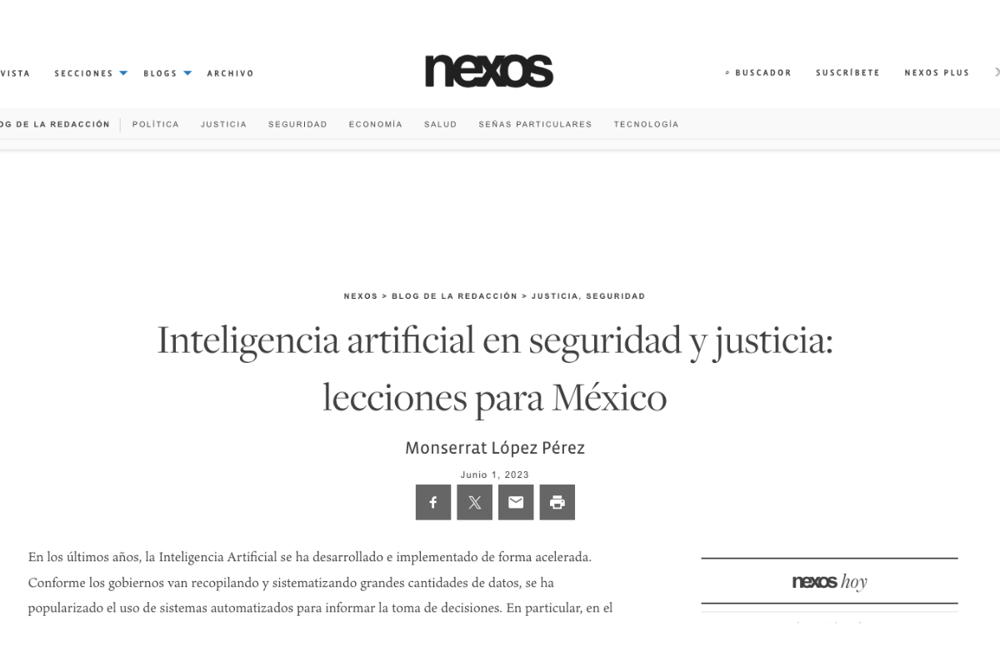

Articles
Mexico’s Violence and Impunity Cycle, Mexico Today 2023
In this article, I examine the cycle of violence and impunity that has plagued Mexico for decades. Only in 2022, 85 people were murdered every single day. Despite the gravity of such crimes, Mexican authorities fail to prosecute them diligently and with a gender perspective.

Artificial intelligence in Security and Justice: Lessons for Mexico
I wrote about the use of Artificial Intelligence in security and justice and its potential risks. In Mexico, we need to start this conversation before AI overtakes us, with technosolutionist perspectives, legal loopholes and without the safeguards to not automate (more) injustices and human rights violations.

Other Articles
See other articles and opinion pieces I have written or contributed to.